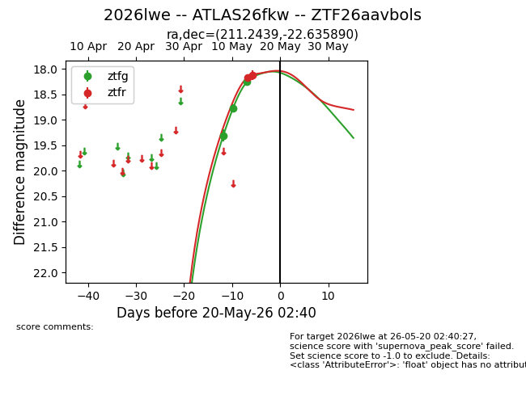
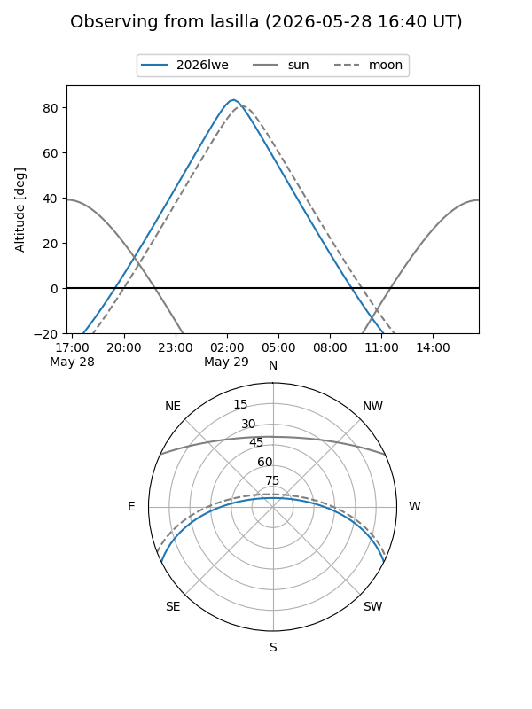
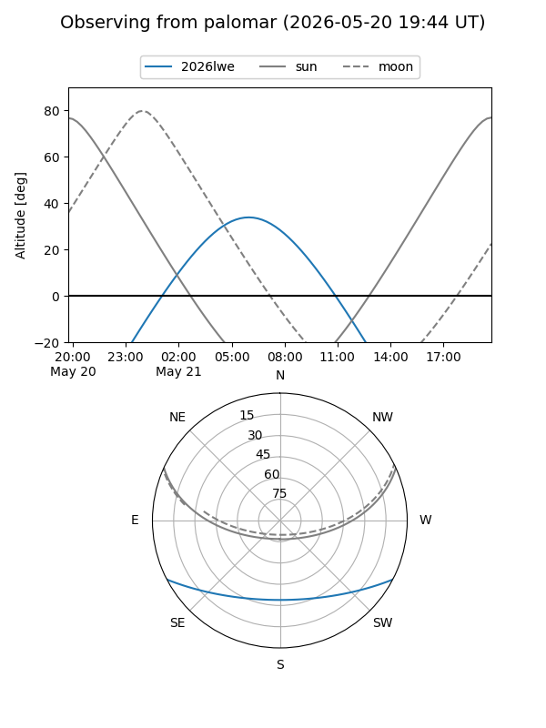
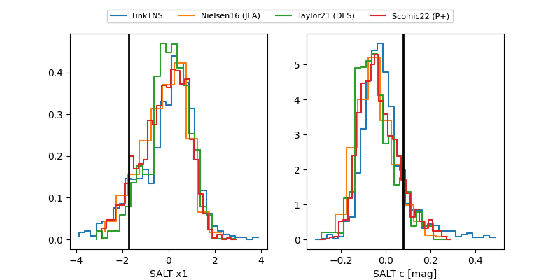

2026lwe
Target 2026lwe at 2026-05-20 02:42
Aliases and brokers:
FINK: link
Lasair: link
ALeRCE: link
TNS: link
YSE: link
alt names
ZTF26aavbols (ztf,fink_ztf)
2026lwe (tns,yse)
ATLAS26fkw (atlas)
Coordinates:
equatorial (ra, dec) = 211.2439,-22.63589
equatorial (HMS+DMS) = 14:04:58.53,-22:38:09.20
galactic (l, b) = (324.3549,+37.15773)
Flags:
Photometry:
last ztfg=18.25, ztfr=18.12
3 ztfg, 2 ztfr detections
Lightcurve

Visibility


Additional plots
